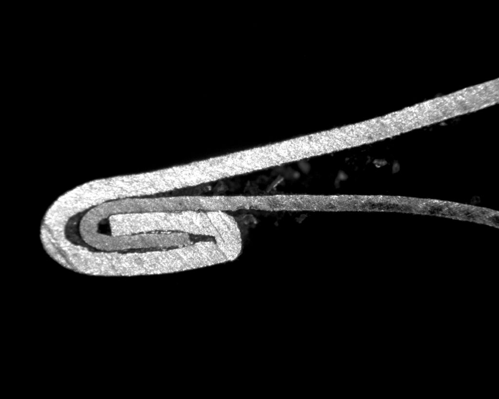
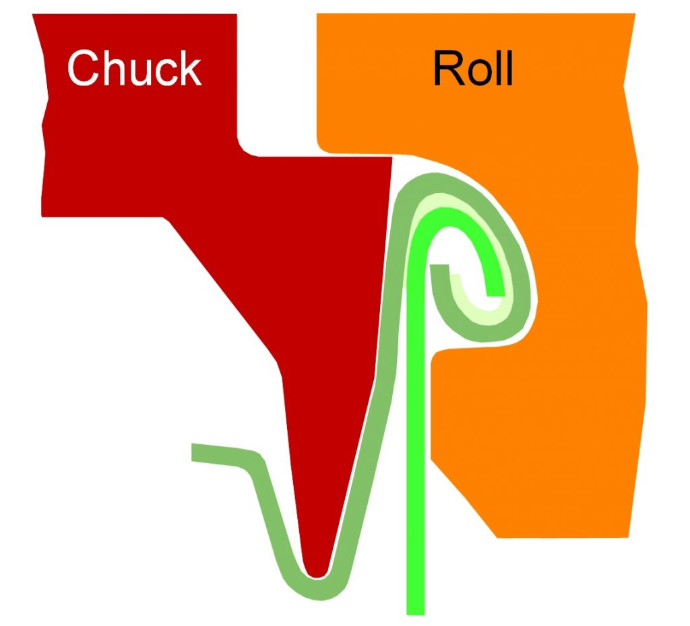
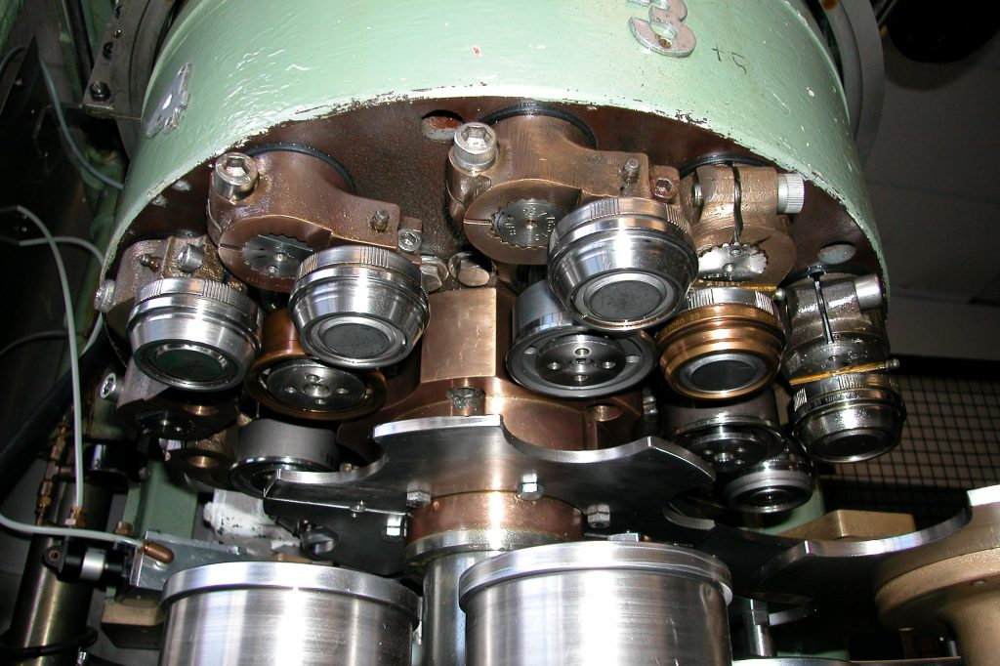
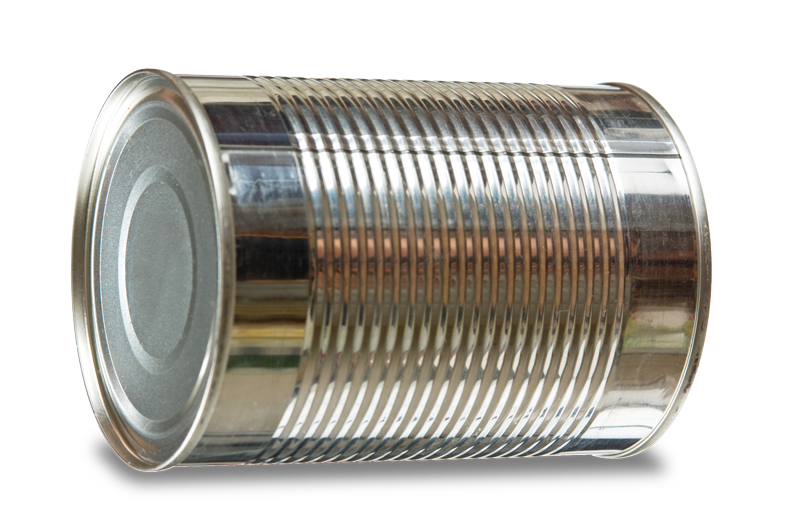
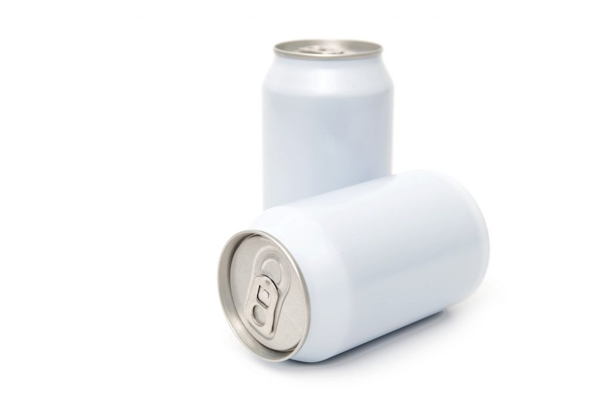
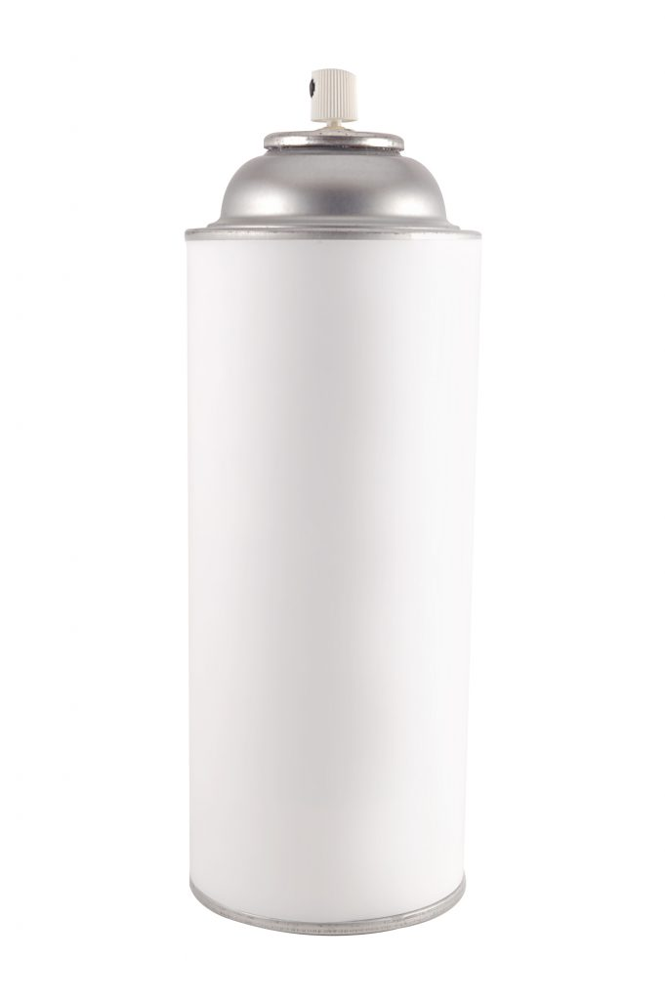
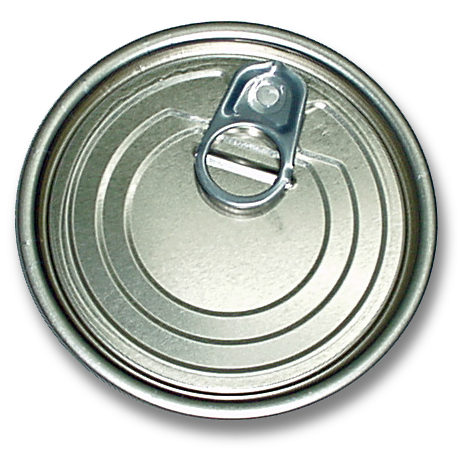
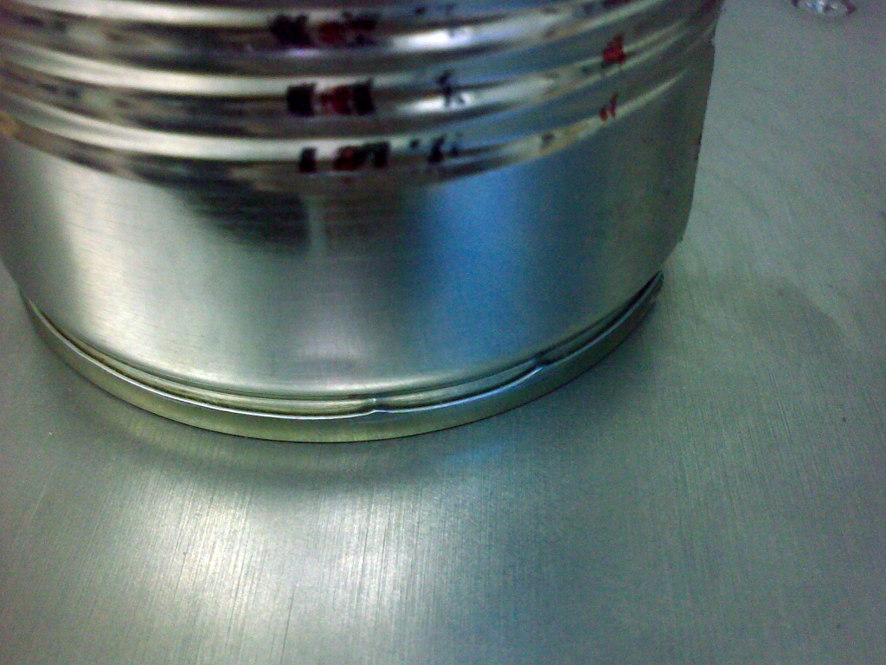
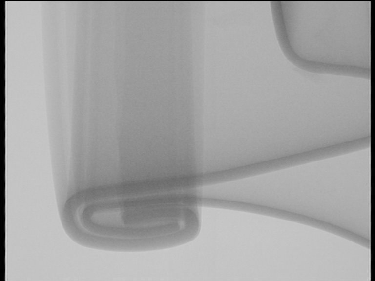

🔍 Visão Geral
Conceitos fundamentais sobre recravação dupla de latas metálicas.

O que é uma Recravação Dupla?
A e o fechamento hermetico de uma lata formado pelo dobramento do curl da tampa com o flange do corpo.

Como é Feita uma Recravação Dupla?
Entenda o processo de formação da recravação dupla em duas operações: primeira e segunda operação.

História da Lata
A historia das embalagens metalicas desde o seculo XIX ate os dias atuais.

Lata de Alimento
Características e especificações da recravação para latas de alimento.

Lata de Bebida
Características específicas da recravação em latas de bebida.

Lata Aerossol
Caracteristicas e exigencias de para latas aerossol.

Tampa Abre-Fácil (EOE)
Tampa de abertura facil e suas caracteristicas de vedacao.

Inspeção Visual da Recravação
Como inspecionar visualmente a para detectar defeitos.

Inspeção por Raio-X da Recravação
Uso de raio-X para inspecionar a qualidade da recravação de forma visual.